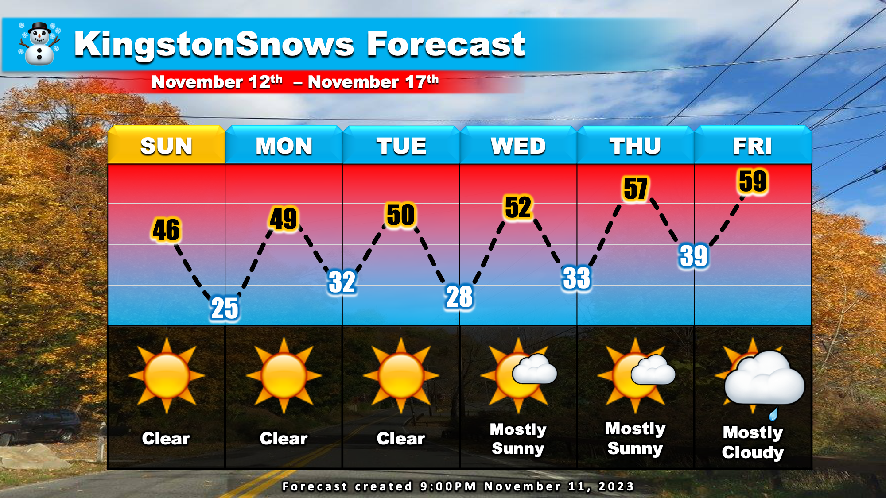

Warning: this is an old update that has been archived. This update is not current.
Sunny week ahead!
School Forecast
through Friday November 17th
Last updated: 9:30PM Saturday November 11, 2023
| 0% (Nope) |
|---|
| 0% (Nope) |
|---|
| 0% (Nope) |
|---|
___________________
If you like sunshine, then you'll like the next few days. A beautiful November week is on tap with ample sunshine through the middle of the week. All the sunshine will be due to a region of high pressure building over our area. This high pressure results from a downward motion of the atmosphere. Clouds need upward movement to form, so their development will be inhibited while the high is present.
The clearer skies will be accompanied by slightly cooler temperatures. Today the Hudson Valley reached 51 degrees following a morning low of 44. The next few days will generally be just shy of 50 with lows near the freezing mark. These temperatures are actually about normal for this time of year. Both clouds and temperatures will gradually increase toward the end of next week as the high pressure weakens. Currently, there is no snow on the horizon, though there's a chance of rain showers Friday night into Saturday.
Next Update:
Probably next weekend
-Ethan
KingstonSnows | Kingston, New York
Website built by Ethan Burwell